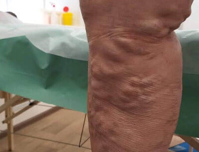
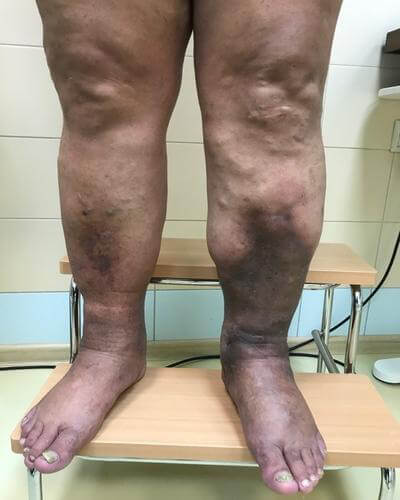
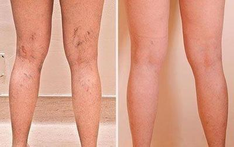

Анна Стоун, известната блогърка в Инстаграм, едва не починала от обикновената варикоза. Вместо да предприеме нещо по въпроса, жената просто не обръщала внимание на разширените си вени.
Както и всички бюти блогъри, Анна се занимавала предимно с външния си вид, а смъртоносното заболяване – варикоза, смятала за несериозен проблем. Така продължило, докато жената не попаднала в болницата.

Анна в болницата
Не се страхувах и дори свикнах да живея с варикозата. Обаче не можех да си обличам каквото поискам, а на плажа се срамувах от черните си вени. Когато ме боляха краката (а това се случваше много често), отказвах покани на приятелите си и се прибирах вкъщи, вместо да се разпускам и да се забавлявам на партито.
Такова схващане на проблема е причина хората да умират от варикоза.
Експертите не спират да повтарят една проста истина, че варикозата няма да мине от само себе си, че това е смъртоносна болест, която причинява смъртта на много хиляди хора по света. Те твърдят, че борбата с варикозата трябва да започва още при първите симптоми на заболяването.
И че хората с генетична предразположеност трябва да правят всичко възможно за профилактика на варикозата.
Първите признаци на варикоза: тежест в краката, отоци, изтръпване, сърбеж, болка и бързо настъпваща умора на краката.
Варикозата причинява тромби, трофични язви, внезапна и мъчителна смърт
Трофична язва, причинена от варикоза

Запусната варикоза
Варикозата води до образуване на тромби в кръвоносните съдове, които могат по всяко време да се откъснат, да стигнат до белите дробове и да запушат белодробната артерия или да причинят инфаркт, ако съсирекът влезе в сърцето.
Запусната варикоза
Варикозата е невидима ежедневна опасност
Дали имате разширени вени или не, можете лесно да определите, като направите този тест.
Проверете, дали имате варикоза
1. Случва ли ви се да се отказвате от плановете си поради болки в краката?
2. Често ли носите обувки с висок ток?
3. Вашите родители имат ли признаци на разширени вени?
4. Имате ли венозна мрежа или потъмняване на вените по краката си?
5. Отбележете наличието на невидими признаци на варикозата
Болка в краката при ходене
Нощни крампи
Сърбеж
Подуване на краката
Усещане за тежест в краката
Изтръпване на краката
6. Колко бързо краката ви се уморяват при ходене?
7. Имате ли болки в краката след работен ден?
Резултат:
Внимание! Резултатът ви сочи, че трябва възможно най-скоро да се погрижите за здравето на краката си и да започнете да се борите с варикозата. Само така ще можете да запазите здравето си и да предотвратите сериозни и опасни проблеми, които причинява варикозата.
Резултат:
Внимание! Резултатът ви сочи, че трябва възможно най-скоро да се погрижите за здравето на краката си и да започнете да се борите с варикозата. Само така ще можете да запазите здравето си и да предотвратите сериозни и опасни проблеми, които причинява варикозата.
Как да преодолеете варикозата?
Блогърката Анна Стоун се обърнала към специалисти едва когато болката в краката ѝ станала постоянна. Не можела да излиза навън, а вкъщи ходела, ридаейки от болка.
Болката беше непоносима, краката ми пулсираха. Имах чувството, че горят! Не можех да ставам от леглото, плачех и крещях от болка. Не знаех, че варикозата може да причинява всичко това!
В болницата сложили жената на системи, назначили ѝ различни препарати за облекчаване на болката. Това помогнало донякъде, но Анна се чувствала много зле. От препаратите тя постоянно повръщала. И всичко това било причинено от варикозата, на която Анна не обръщала внимание.
След известно време болката отшумяла. Но специалистите ѝ казали, че болката ще се появи отново, тъй като варикозата вече е в етап, когато болките стават хронични.
Първоначално Анна решила да се подложи на операция, но след като научила за противопоказанията и възстановителния период, жената веднага отказала да ѝ бъде направена операцията.
Последици и възстановяване след операция е един дълъг и мъчителен период
Анна искала да намери съвременно и безопасно средство, което да ѝ помогне за преодоляване на варикозата.
По време на престоя си в клиниката, тя намерила интервю с експерт, който половин живот се бори с варикозата. Експертът разказва за нов препарат, който е истински пробив в борбата с разширените вени.
Анджела Бушар, експерт по терапия на варикозата
„Повечето препарати имат тясна насоченост: облекчаване на болката, успокояване на сърбежа или премахване на отоците. Този подход не е ефективен, тъй като варикозата изисква комплексно въздействие. Средството оказва точно такъв ефект. Този гел допринася за активиране на кръвообращението в краката и за оттичане на застоялата кръв от вените. А когато тъканите отново получат всички хранителни елементи, ще изчезнат крампите, подуването, венозната мрежа, болката и усещането за тежест в краката“.
Средството има отличен състав с комплекс от растителни екстракти, които са известни със своя лечебен ефект при варикоза.
Анна препрочитала статията отново и отново, а след това намерила производителя на средството и си поръчала две опаковки. Получила гела три дни по-късно и веднага започнала да го прилага. Също така тя се отказала от красиви, но неудобни обувки и си правила антиварикозен масаж на краката.
Краката на Анна след 1 курс с
Средството ми помогна! Успях да се избавя не само от съдовите звезди, но и да забравя за невидимите признаци на разширени вени.
Подуването, болката, сърбежът и умората изчезнаха от живота ми!
Вече не се срамувах от краката си, можех да бягам, колкото си искам, и да се разхождам с часове. Дори отново се занимавам с танци, от които трябваше да се откажа, откакто ми се появи варикозата.
След като жената се избавила от варикозата, животът ѝ се променил. Това личи и по снимките ѝ в Инстаграм: тя може да се облича и да се снима така, както иска самата тя, без да се притеснява, че някой ще се смути от външния вид на краката ѝ.
Тя може да прави продължителни разходки, да тича и дори да танцува.
Анна споделя, че гелът има редица важни предимства в сравнение с другите средства против варикоза:
- Комфорт Бързо попива в кожата, не е мазен, има неутрална миризма
- Ефективност Облекчава болката в краката за броени минути
- Надеждност След само 1 курс вените по краката стават по-бледи, а невидимите симптоми на варикозата изчезват
Варикозата наистина е опасна и убива хората
Възприятието на разширените вени като козметичен проблем е погрешно. Още при първите признаци на варикоза трябва незабавно да се вземат мерки, в противен случай заболяването бързо ще прогресира, болката ще стане хронична, вените ще потъмнеят и изпъкнат, ще се образуват тромби и на краката ще се появят незаздравяващи трофични язви.
Ако варикозата ви е позната от личен опит, средството ще ви помогне да възвърнете на краката си красотата, здравето и силата, както помогнал и на Анна!
Може да си поръчате , като попълните формуляра за поръчка, което е по-лесно, отколкото е в другите магазини.
Попълнете формуляра
Отговорете на обаждането от оператора, за да уточните детайлите за доставка
Има начин да се избавите от варикозата, не ѝ давайте нито един шанс! Успех!
ВНИМАНИЕ! До (включително) средството против варикоза се предлага с отстъпка 50%. Броят на опаковките на промоционална цена е ограничен! Побързайте да поръчате своята опаковка!
Към момента остават: 24 опаковки
Условия за получаване на :
Трябва да живеете на територията на {{location.country_name}} (в момента промоцията е валидна само живеещите в страната)
Възраст над 40 години (за да осигурим гела за най-уязвимата категория от гражданите)
Само по един курс на човек (мярка срещу спекулантите)
Коментари
Милена Златинова
гр. Айтос
За мен този гел е истинско откритие, което промени живота ми. Варикозата ме превърна от активна жена в домошарка. След работа се прибирах вкъщи, вместо да излизам с приятели. Беше много тъжно. Именно промени всичко. Преминах курс на лечение и от болките в краката не остана и следа.
Желязка Инджова
гр. София
Аз също харесвам това средство - бързо попива и не цапа дрехите.
Петка Сапарева
гр. Търговище
Облекчава болката за минути. Доволна съм.
Яна Демиревска
Кажете, моля, има ли още промоционални опаковки?
Петър Вълчев
гр. Тетевен
Да, отстъпката още е валидна, току-що поръчах опаковката за жена си.
Йорданка Калоянова
гр. Перник
Купих този гел от приятел с голяма надценка, както се оказа. По-добре да бях го поръчала сама. Че и формулярът е много лесен.
Марин Лефтеров
Добро средство против разширени вени. Откакто мажа краката си с него, забравих за болката.
Марияна Ружева
гр. Пловдив
Видях я в Инстаграм! Дори я последвах там и никога не съм си мислила, че тя има варикоза. Добре, че се е избавила от нея и сега публикува толкова красиви снимки и не само на лицето си.
Стоил Средков
гр. Костинброд
Жена ми се излекува от варикозата с този гел. Добро средство.
Вили Проданова
гр. Мездра
Току-що направих поръчка! Получих отстъпката!
Зорница Чакалова
гр. Стара Загора
Откакто се отървах от варикозата, започнах нов живот, дори получих повишение. Иначе седях на работа и само мечтаех да се прибера вкъщи и да легна в леглото, толкова ме боляха краката. А сега всичко е супер.
Теодора Павлова
помага. Препоръчвам го.
Калин Билярски
гр. Козлодуй
Работя като сервитьор, вечерно време краката ужасно ме болят, но благодарение на болките отшумяха.
Ваня Дюлгерова
гр. Варна
Обожавам я! Надявах се, че ще остане с хубавеца Джейми :(
Благодаря! Вашият отзив е приет и е изпратен за модериране.


Коментари
Милена Златинова
гр. Айтос
За мен този гел е истинско откритие, което промени живота ми. Варикозата ме превърна от активна жена в домошарка. След работа се прибирах вкъщи, вместо да излизам с приятели. Беше много тъжно. Именно промени всичко. Преминах курс на лечение и от болките в краката не остана и следа.
Желязка Инджова
гр. София
Аз също харесвам това средство - бързо попива и не цапа дрехите.
Петка Сапарева
гр. Търговище
Облекчава болката за минути. Доволна съм.
Яна Демиревска
Кажете, моля, има ли още промоционални опаковки?
Петър Вълчев
гр. Тетевен
Да, отстъпката още е валидна, току-що поръчах опаковката за жена си.
Йорданка Калоянова
гр. Перник
Купих този гел от приятел с голяма надценка, както се оказа. По-добре да бях го поръчала сама. Че и формулярът е много лесен.
Марин Лефтеров
Добро средство против разширени вени. Откакто мажа краката си с него, забравих за болката.
Марияна Ружева
гр. Пловдив
Видях я в Инстаграм! Дори я последвах там и никога не съм си мислила, че тя има варикоза. Добре, че се е избавила от нея и сега публикува толкова красиви снимки и не само на лицето си.
Стоил Средков
гр. Костинброд
Жена ми се излекува от варикозата с този гел. Добро средство.
Вили Проданова
гр. Мездра
Току-що направих поръчка! Получих отстъпката!
Зорница Чакалова
гр. Стара Загора
Откакто се отървах от варикозата, започнах нов живот, дори получих повишение. Иначе седях на работа и само мечтаех да се прибера вкъщи и да легна в леглото, толкова ме боляха краката. А сега всичко е супер.
Теодора Павлова
помага. Препоръчвам го.
Калин Билярски
гр. Козлодуй
Работя като сервитьор, вечерно време краката ужасно ме болят, но благодарение на болките отшумяха.
Ваня Дюлгерова
гр. Варна
Обожавам я! Надявах се, че ще остане с хубавеца Джейми :(